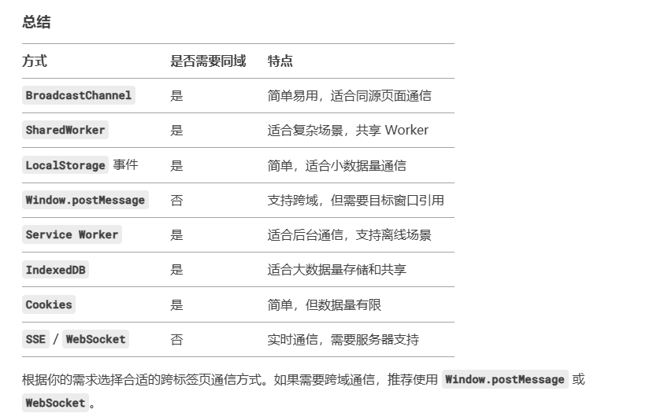

跨标签页通信
需要在谷歌无痕浏览器中测试
运行命令serve .
打开localStorage页面
打开BroadcastChannel页面
打开SharedWorker页面
1. 使用localStorage
将需要共享的数据存储在LocalStorage或SessionStorage中。这些存储区域在同一个浏览器的不同标签页之间是共享的，因此一个标签页写入的数据可以被其他标签页读取。
通过监听storage事件，当一个标签页修改了LocalStorage或SessionStorage中的数据时，其他标签页可以通过监听这个事件来感知数据的变化并进行相应的处理。
2. 使用BroadcastChannel
API允许不同的浏览器上下文（例如不同标签页、窗口、甚至不同的浏览器实例）之间进行双向通信。
通过创建一个BroadcastChannel对象，并给它指定一个名称，不同标签页可以通过这个名称进行通信。
3. 使用SharedWorker,不兼容IE11
SharedWorker是一个可以在多个浏览器上下文之间共享的后台线程，不同的标签页可以通过SharedWorker来进行通信。
标签页通过共享的SharedWorker来发送和接收消息，从而实现通信。
4. 使用SSE或者WebSocket，可以跨域，但是成本高，需要服务端支持
